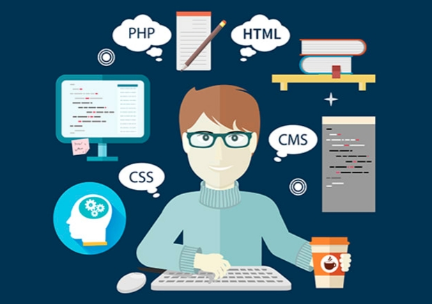
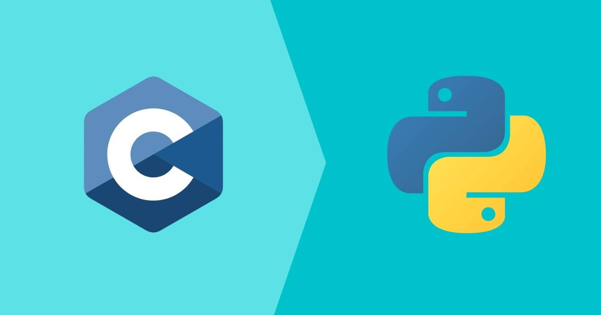
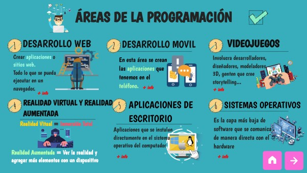

Programación

Fundamentos de la Programación
En esta sección se exploran los conceptos esenciales de la programación, desde la sintaxis básica hasta la construcción de programas funcionales. A través del curso aprendí cómo transformar ideas lógicas en instrucciones que la computadora pueda ejecutar.
La programación implica combinar estructuras como variables, operadores, condicionales y ciclos para crear soluciones completas. Estas herramientas permiten controlar el flujo de un programa y dar respuesta a diferentes casos o escenarios.
Lenguajes Utilizados
Durante el curso se trabajó con dos lenguajes principales:
- C: utilizado para comprender cómo funcionan las instrucciones a un nivel más cercano al hardware.
- Python: ideal para aplicar lógica de forma sencilla y desarrollar programas más rápido.
Cada lenguaje permitió desarrollar diferentes habilidades: C fortalece el análisis de memoria y estructura, mientras que Python facilita la resolución de problemas y la lectura del código.
Aplicaciones Prácticas
Entre los ejercicios desarrollados se incluyen programas que utilizan ciclos, manejo de datos, estructuras de control e incluso algoritmos de búsqueda o toma de decisiones. Estos proyectos ayudaron a reforzar la lógica y el pensamiento computacional.
La programación es una habilidad fundamental que sirve como base para comprender temas más avanzados como redes, bases de datos y desarrollo de software en general.